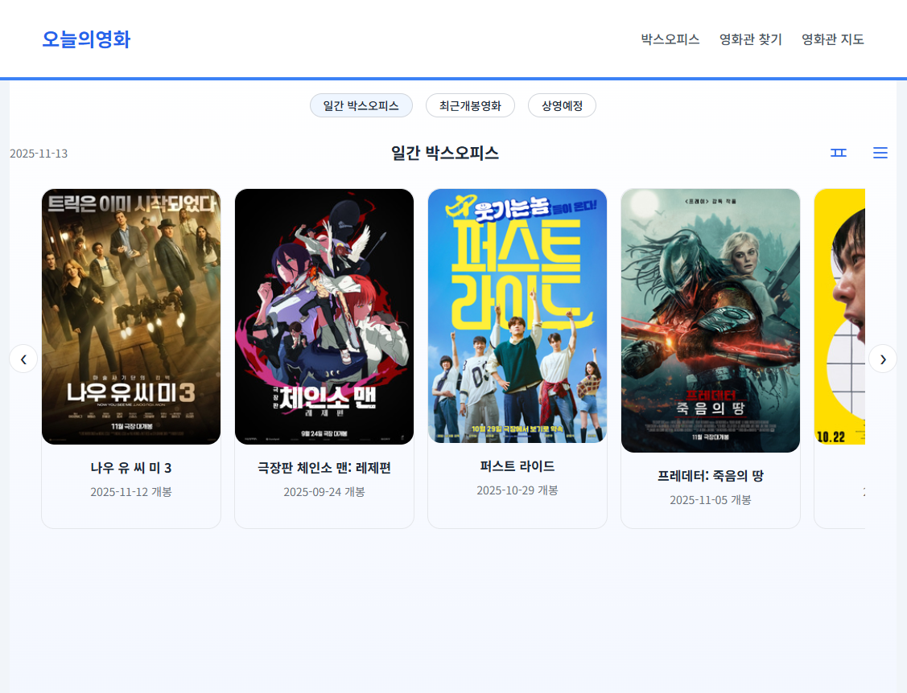

🎬 영화 정보 통합 플랫폼
개발 기간: 2024.10 ~ 2024.11 (1개월) |
개발 인원: 1인 (기획/설계/개발/배포)
배포: Render + PostgreSQL | 핵심 기술: Spring Boot, JPA, REST API, Spring Security
배포: Render + PostgreSQL | 핵심 기술: Spring Boot, JPA, REST API, Spring Security
KOBIS(영화진흥위원회)와 KMDB(한국영화데이터베이스) 두 개의 외부 API를 통합하여 실시간 박스오피스 순위와 1,900여 편의 영화 상세 정보를 제공하는 웹 서비스입니다. Adapter 패턴으로 외부 API 의존성을 격리하고, N+1 쿼리 최적화를 통해 응답 속도를 개선했습니다.
🖼️ 주요 화면

실시간 박스오피스 & 영화 목록

영화 상세 정보
🛠 기술 스택
Backend
Spring Boot 3.x
Java 21
Spring Data JPA
Lombok
Java 21
Spring Data JPA
Lombok
Database
PostgreSQL
H2 (Dev)
Caffeine Cache
JPA/Hibernate
H2 (Dev)
Caffeine Cache
JPA/Hibernate
Security
Spring Security
환경변수 관리
환경변수 관리
Frontend
Thymeleaf
JavaScript (ES6+)
JavaScript (ES6+)
Tools
Git/GitHub
Gradle
Postman
IntelliJ IDEA
Gradle
Postman
IntelliJ IDEA
Deploy
Render
PostgreSQL
PostgreSQL
🔧 핵심 문제 해결 경험
1. 외부 API 데이터 통합 아키텍처 설계
🎯 문제 상황
• KOBIS API: 박스오피스 순위만 제공 (포스터/상세정보 없음)
• KMDB API: 영화 상세 정보 제공
• 두 API의 영화 제목이 공백, 특수문자 차이로 매칭 실패
• KMDB API: 영화 상세 정보 제공
• 두 API의 영화 제목이 공백, 특수문자 차이로 매칭 실패
💡 해결 과정
1. Adapter 패턴으로 외부 API 의존성 격리
2. KMDB 데이터를 먼저 DB에 저장 (1,928건)
3. KOBIS 순위 조회 시 2단계 매칭 전략 적용:
• 1차: 정확 매칭 (title 완전 일치)
• 2차: 공백 제거 후 LIKE 검색
4. 매칭 실패 시 기본 정보만 표시
2. KMDB 데이터를 먼저 DB에 저장 (1,928건)
3. KOBIS 순위 조회 시 2단계 매칭 전략 적용:
• 1차: 정확 매칭 (title 완전 일치)
• 2차: 공백 제거 후 LIKE 검색
4. 매칭 실패 시 기본 정보만 표시
✅ 결과: 대부분의 영화 데이터 매칭 성공, Service 계층의 외부 의존성 제거
2. N+1 쿼리 문제로 인한 성능 저하
🎯 문제 상황
• 영화 상세 페이지 로딩 시 출연진마다 개별 쿼리 발생
• 영화 1개 조회 시 쿼리 50+ 개 실행 (출연진 수만큼)
• 페이지 로딩 시간 2초 이상 소요
• 영화 1개 조회 시 쿼리 50+ 개 실행 (출연진 수만큼)
• 페이지 로딩 시간 2초 이상 소요
💡 해결 과정
1. 상황별 Repository 메서드 분리:
• findById(): 기본 조회용
• findByIdWithPeople(): LEFT JOIN FETCH 사용
2. Controller에서 용도에 맞는 메서드 선택적 호출
3. @Transactional(readOnly = true)로 조회 최적화
• findById(): 기본 조회용
• findByIdWithPeople(): LEFT JOIN FETCH 사용
2. Controller에서 용도에 맞는 메서드 선택적 호출
3. @Transactional(readOnly = true)로 조회 최적화
✅ 결과: 쿼리 수 대폭 감소, 응답 속도 개선 (2초 → 0.79초)
3. JsonNode → DTO 구조 리팩토링
🎯 문제 상황
• JsonNode로 API 응답 직접 파싱
• 필드명 오타 위험, 타입 안정성 없음
• API 변경 시 영향 범위 파악 어려움
• 필드명 오타 위험, 타입 안정성 없음
• API 변경 시 영향 범위 파악 어려움
💡 해결 과정
1. 외부 API DTO / 내부 Entity 명확히 분리
2. Mapper 계층 도입으로 변환 로직 캡슐화
3. @JsonProperty로 API 필드명 매핑
4. 3일간 전체 구조 리팩토링
2. Mapper 계층 도입으로 변환 로직 캡슐화
3. @JsonProperty로 API 필드명 매핑
4. 3일간 전체 구조 리팩토링
✅ 결과: 타입 안정성 확보, 유지보수성 향상, 계층 간 결합도 감소